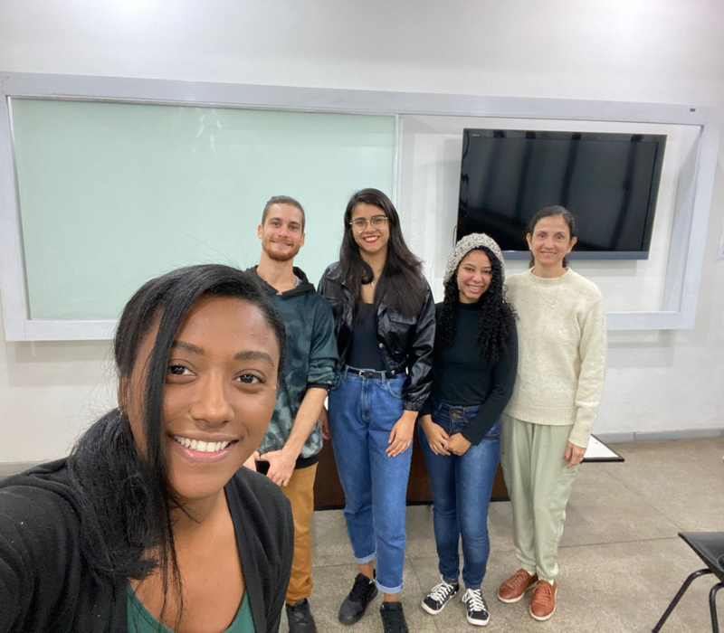

Qual o nosso objetivo?
O Projeto de Extensão Plantas Tóxicas Ornamentais tem como objetivo a consientização da população, de todas as faixas etárias, visando a sáude pública, sobre plantas dos quais estamos em contato no dia a dia, para uso ornamental, porém podem ser tóxicas. Devido a esse "perigo silencioso", termos usado para o tipo de perigo que essa plantas representam, nosso projeto visa, além da consientização, mas também o manejo correto com tais plantas e os primeiros socorros em caso de acidentes com as plantas

Qual a nossa metodologia?
O projeto Plantas Tóxicas Ornamentais atua em feira de Ciências organizadas pela Universidade Estadual Norte-Fluminense Darcy Ribeiro (UENF), visitações em escolas e feiras organizadas pelas escolas que nos convidam, através de curso e através do nosso instagram.
